Project 4
Overview
Part A: Image Warping and Mosaicing
A.1 Shoot the Pictures
Building
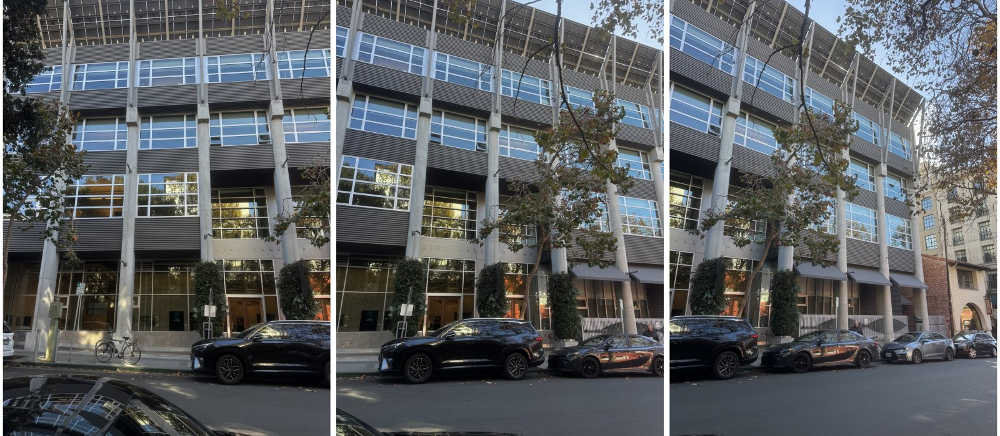
Café
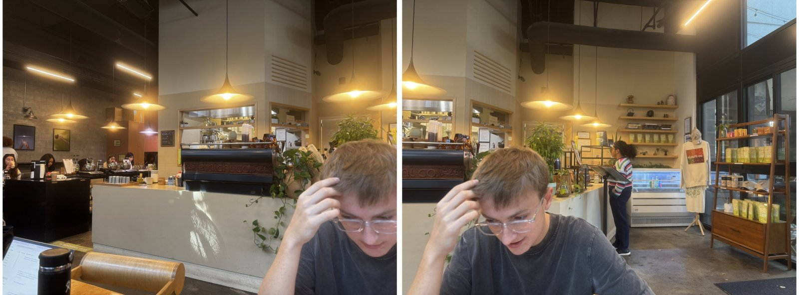
Bedroom
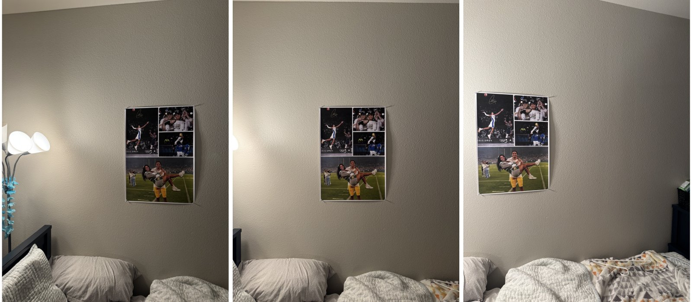
A.2 Recover Homographies
$$
\begin{bmatrix} wx' \\ wy' \\ w \end{bmatrix} =
\begin{bmatrix} a & b & c \\ d & e & f \\ g & h & 1 \end{bmatrix}
\begin{bmatrix} x \\ y \\ 1 \end{bmatrix}
\quad\Longrightarrow\quad
x' = \frac{ax + by + c}{gx + hy + 1}, \qquad
y' = \frac{dx + ey + f}{gx + hy + 1}
$$
$$
\begin{bmatrix}
x_1 & y_1 & 1 & 0 & 0 & 0 & -x_1 x_1' & -y_1 x_1' \\
0 & 0 & 0 & x_1 & y_1 & 1 & -x_1 y_1' & -y_1 y_1' \\
\vdots & & & & & & & \vdots \\
x_n & y_n & 1 & 0 & 0 & 0 & -x_n x_n' & -y_n x_n' \\
0 & 0 & 0 & x_n & y_n & 1 & -x_n y_n' & -y_n y_n'
\end{bmatrix}
\begin{bmatrix} a \\ b \\ c \\ d \\ e \\ f \\ g \\ h \end{bmatrix}
=
\begin{bmatrix} x_1' \\ y_1' \\ \vdots \\ x_n' \\ y_n' \end{bmatrix}
$$
Building
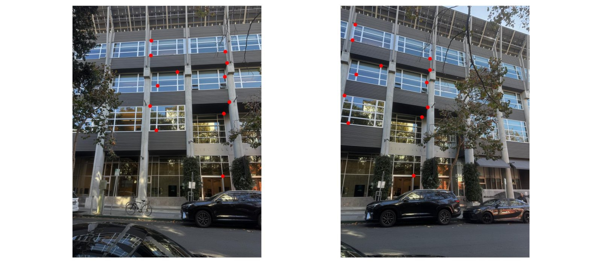
$$H_{1 \to 2} = \begin{bmatrix} 1.514 & -0.1725 & -2167 \\ 0.533 & 1.315 & -1482 \\ 1.266 \times 10^{-4} & -6.993 \times 10^{-6} & 1 \end{bmatrix}$$
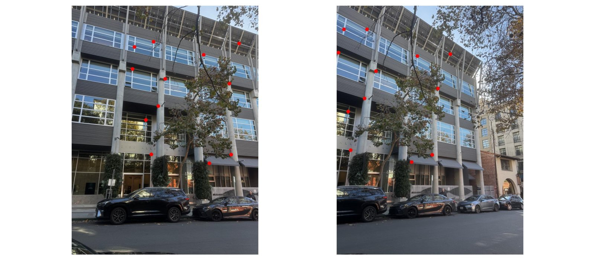
$$H_{2 \to 3} = \begin{bmatrix} 1.43 & -0.1532 & -1725 \\ 0.4319 & 1.245 & -1189 \\ 1.061 \times 10^{-4} & -8.888 \times 10^{-6} & 1 \end{bmatrix}$$
Café
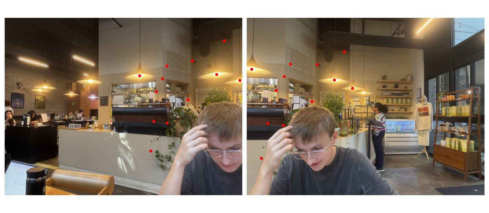
$$H_{1 \to 2} = \begin{bmatrix} 1.748 & -0.204 & -5049 \\ 0.4386 & 1.414 & -1662 \\ 1.5 \times 10^{-4} & -7.181 \times 10^{-5} & 1 \end{bmatrix}$$
Bedroom
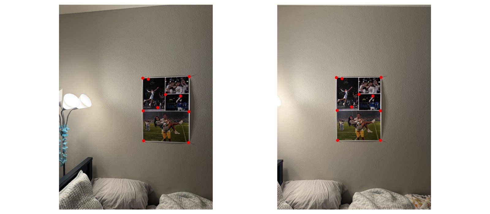
$$H_{1 \to 2} = \begin{bmatrix} 1.21 & 0.005638 & -987.7 \\ 0.1394 & 1.132 & -378.3 \\ 4.929 \times 10^{-5} & 1.531 \times 10^{-6} & 1 \end{bmatrix}$$
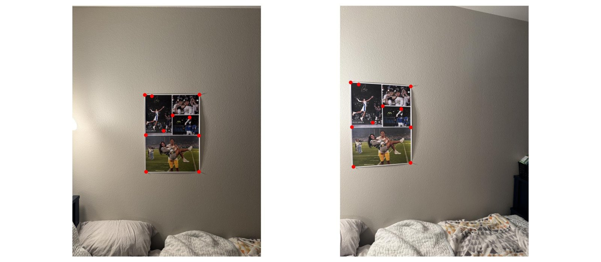
$$H_{2 \to 3} = \begin{bmatrix} 1.484 & 0.02496 & -2216 \\ 0.2762 & 1.354 & -1121 \\ 1.01 \times 10^{-4} & 1.274 \times 10^{-5} & 1 \end{bmatrix}$$
A.3 Warp the Images
Synthetic test
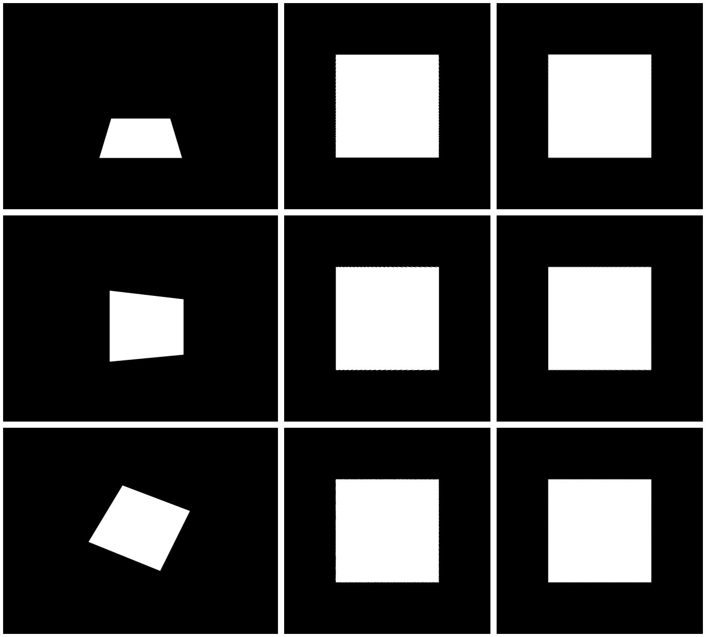
Rectification
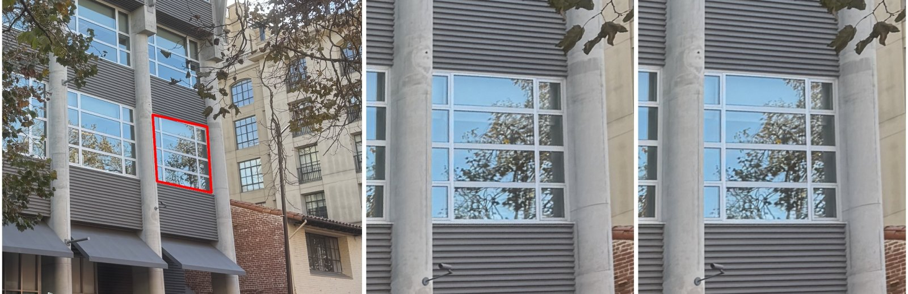
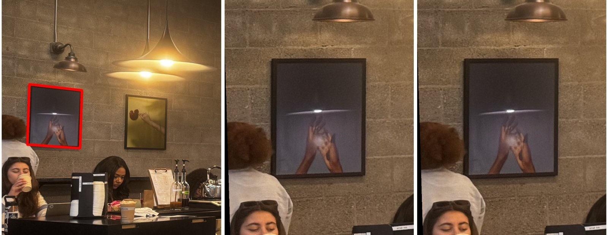
Nearest neighbor vs. bilinear
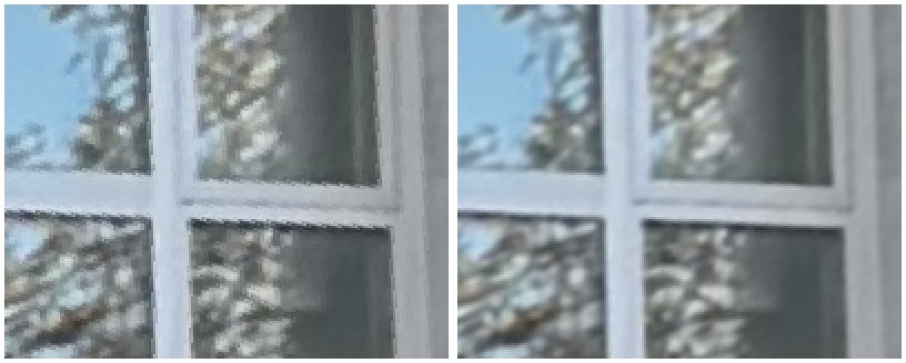
| Warp | Nearest neighbor | Bilinear |
|---|---|---|
| Synthetic square (\(400 \times 400\) output, grayscale) | 0.005 s | 0.008 s |
| Elaichi window (\(1001 \times 1101\) output) | 0.074 s | 0.174 s |
A.4 Blend the Images into a Mosaic
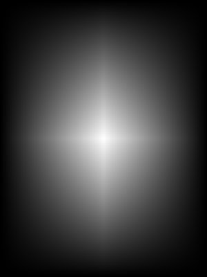
Building
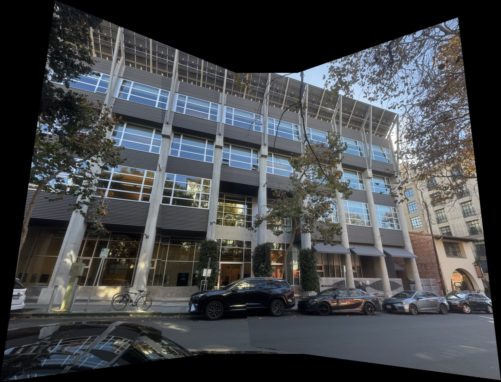
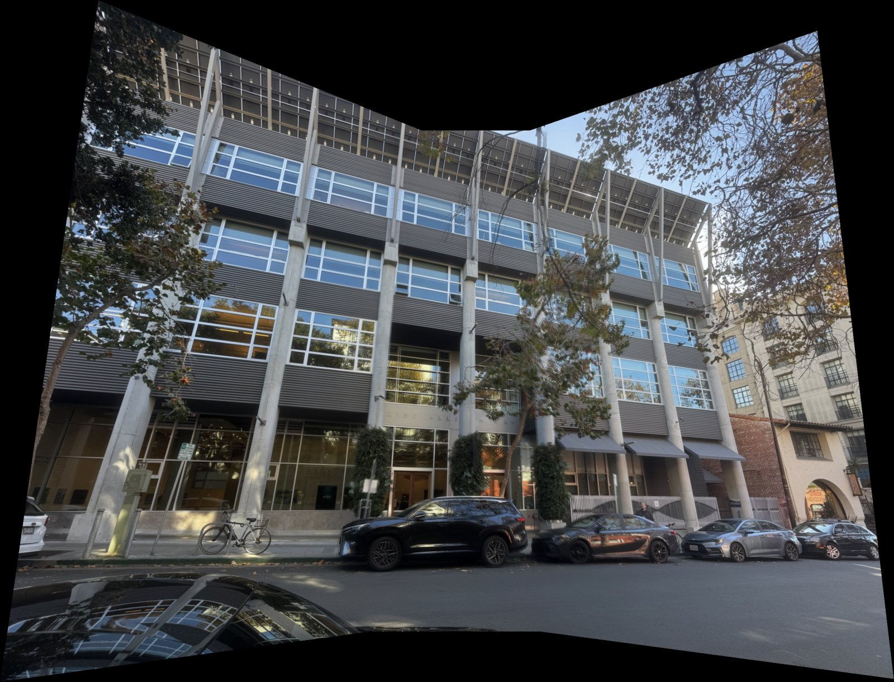
Café
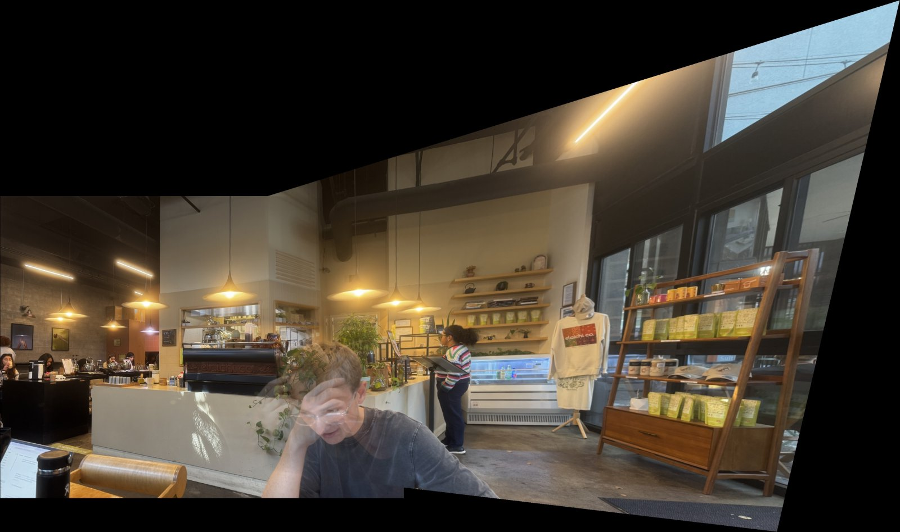
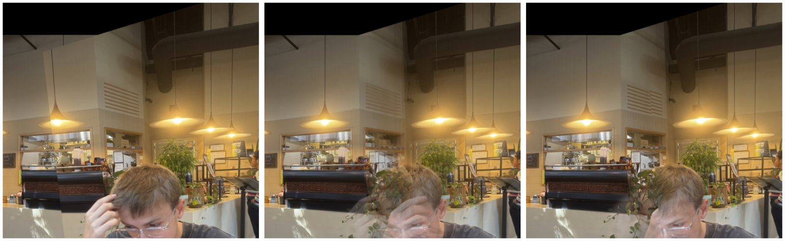
Bedroom
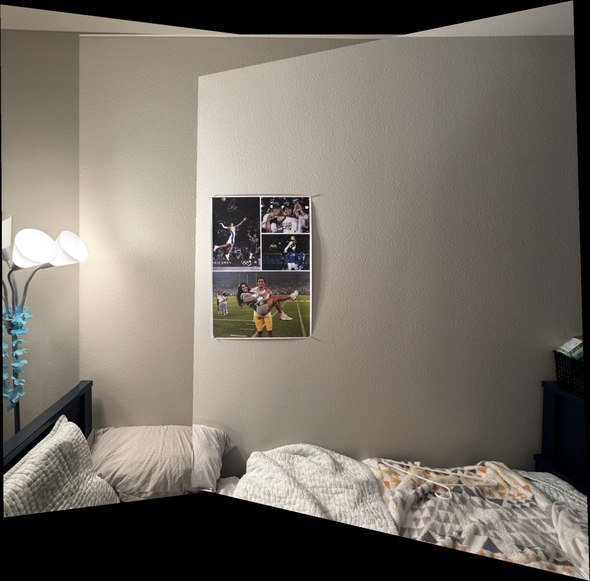
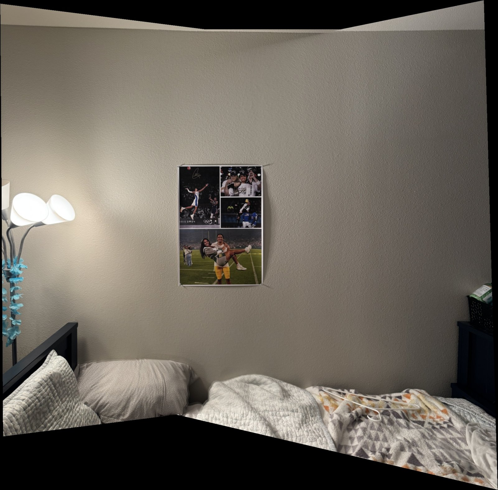
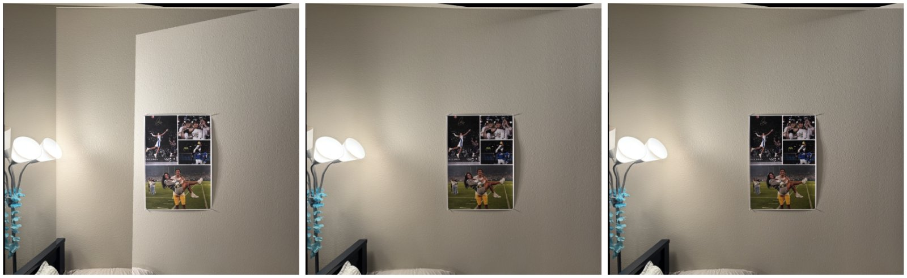